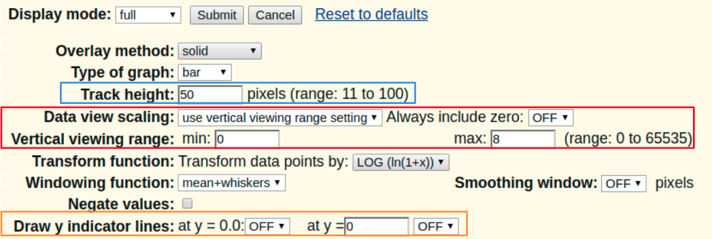
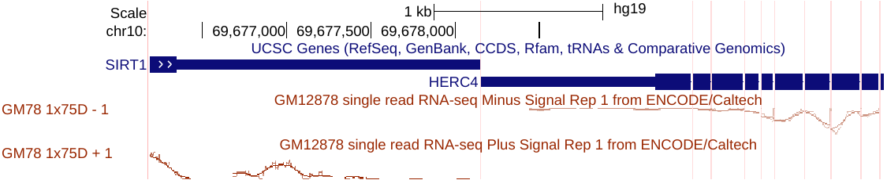
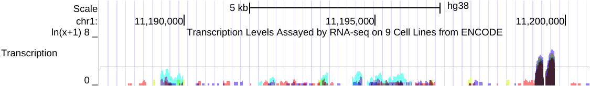
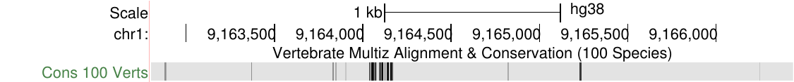
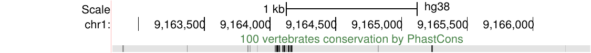
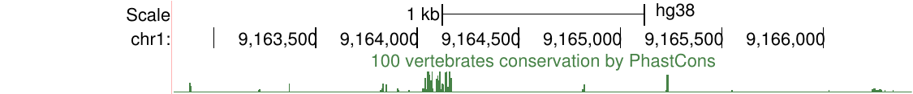
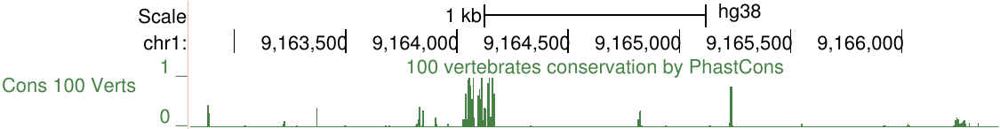
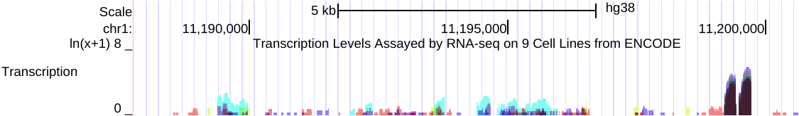
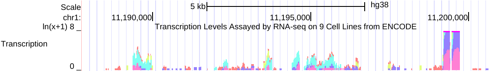
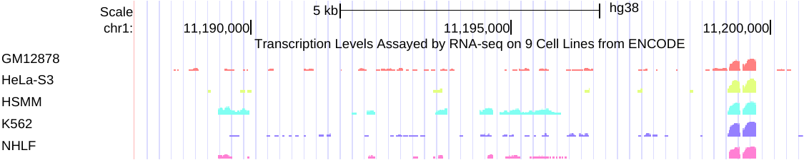

Configuring graph-based tracks
Genome Browser graph-based tracks may be configured in a variety of ways to highlight different
aspects of the displayed information. Some track types, such as BAM tracks and certain gene tracks,
offer dynamic calculation of items in the current window to display a density graph where the height
is proportional to the number of items mapped to each genomic position. The following information
explains each of the available configuration options.
Display settings

Type of graph: The default "Bar" setting depicts the graph data using
color-filled bars. To view the data as a series of points or lines, select the
"Points" setting.
Track height (boxed in blue): To change the default display height of the graph in
pixels, type in a value from within the indicated range.
Data view scaling (boxed in red): The default "Use vertical viewing range setting"
option displays the data using the parameters specified in the Vertical viewing range setting. To
configure the graph to automatically scale to a range defined by the minimum and maximum data
points in the current view, select the "Auto-scale to data view" option. To keep the
y=0 value in view at all times when Auto-scale is selected, set "Always include
zero" to "ON".
- When viewing signal tracks within a composite group use
"group auto-scale" to enable having all tracks scaled against the one track
in the group that has the highest maximum data points in the current view.
For example, below is a side-by-side image of two views of the same data from a selection
of cell lines within a composite of related RNA-seq experiments. On the left is the
original "auto-scale to data view" setting, where each track is auto-scaled
to appear at each track's highest value. And on the right is the new "group
auto-scale" setting for the same RNA-seq data where all tracks are scaled against
the one track in the region that has the highest value (67215 for IMR9 cell TAP + 1).

Click this link to interact with the original "auto-scale to data view" on
the left, and to contrast the results with the new "group auto-scale" click this
link.
- Note that the "group auto-scale" setting is meant to be turned on and off at the
composite group track set level, but you can toggle individual tracks. For instance,
click the second "group auto-scale" session
link that has all tracks adjusted to
the highest value (67215 for IMR9 cell TAP + 1). If you right-click that individual highest track
and instead of configuring the track set, select to configure only the subtrack IMR9 cell TAP + 1
from "group auto-scale" to "auto-scale to data view" and select OK
and then refresh your browser window (or click one of the "refresh" buttons on the
screen) you will see all the tracks adjust to the next-highest track within all tracks
still tagged to display "group auto-scale" (39320 for IMR9 cell + 1).
Vertical viewing range (boxed in red): The min and max values specify the vertical portion of
the graph that is displayed (default range is 30-70). These numbers can be used to set data
threshold indicators. For example, to display only those GC values greater than 50 percent, set
the min value to "50".
Transform function: Transforms the data points by the function selected in the
drop-down menu. Usually the default setting is "None".
Windowing function: When a view is too large to show individual data values, the
values must be combined to produce a plot point. This option specifies the combining function to
be used (default is "Mean"):
-
"Mean+whiskers" - displays the mean in a dark shade, one standard deviation around the
mean in a medium shade, and the maximum/minimum in a light shade. For bar graphs only the mean,
the mean plus a standard deviation, and the max are visible. This mode is not available if the
Overlay method is stacked.
-
"Maximum" - displays the maximum value of all the points to be combined.
-
"Mean" - displays the mean.
-
"Minimum" - displays the minimum of all the points to be combined.
Smoothing window: When set to a numerical value, this option determines the size,
in pixels, of a smoothing window to be passed over the plot to smooth the edges of the bars or
lines. This is equivalent to a trend line calculation on the graph. The default setting is
"OFF".
Negate values: When checked, all values in the wiggle are negated, meaning that
positive values become negative and vice-versa. This is useful for wiggles representing
transcription or other activities on the minus strand. Be aware that wiggles with negative values
are drawn in altColor not color as positive values
are. The below image shows ENCODE RNA-seq data around two genes on different strands, SIRT1 and
HERC4, with a minus signal track using Negate values to flip the wiggle display to
emphasize that HERC4 is expressed on the minus strand. This image also displays the signal graphed
in points and a smoothing window of 16 pixels.

Draw y indicator lines (boxed in orange):
-
at y= 0.0: Select the "ON" setting to display a line marking the 0.0
position on the graph (default is "OFF").
-
at y= : Select the "ON" setting to display a line on the graph at
the specified numerical value (defaults are "0" and "OFF"). This line can be
used to mark a significant threshold on the graph. For example, in the image below,
y=3.

When you have finished making your configuration changes, click the Apply button to preview
your changes, or click the Submit button to return
to the annotation track display page.
Annotation track display modes
Each annotation track within the window may have up to five display modes:
- Dense
- The track is displayed with all features collapsed into a single line.
The darker the line color the greater the wiggle value at that location.

- Squish
- The track is displayed with all the features collapsed into a single
line, much like the dense display mode with greater compression.

- Pack
- The track displays the wiggle value associated with each annotation feature creating a
histogram-like image, much like the full display mode with greater compression.

- Full
- The track displays the wiggle value associated with each annotation feature creating a
histogram-like image.

- Hide
- The track is not displayed at all. To hide all the annotation tracks, click
the hide all button.
Overlay method
Note that not all graph-based tracks include the Overlay options.
- Transparent
- This setting displays the colored
transparent graphs of multiple subtracks overlayed in the same vertical space.

- Solid
- This setting displays the colored opaque graphs of multiple subtracks
overlayed in the same vertical space.

- Stacked
- This setting displays each graph stacked on top of each other where the
high point of the graph is the sum of all the values.

- None
- This setting displays each graph in its own vertical space.
